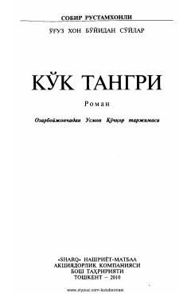

KTO'g'uzxon davri va qadim turkiy xalqlarning e'tiqodlari haqidagi tarixiy roman.
Ushbu roman taniqli ozarbayjon yozuvchisi Sobir Rustamxonli qalamiga mansub bo'lib, unda O'g'uzxon timsolida qadim turkiy xalqlarning hayoti, urf-odatlari va ularning yakkatangrichilikka bo'lgan e'tiqodlari tasvirlanadi. Asar tarixiy voqeliklar va xalqning ma'naviy intilishlarini o'zida mujassam etgan yorqin badiiy asardir.